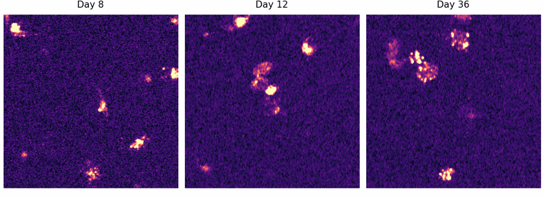

J11_ROI002
J11 / PLD3_TMEM106B_mCherry_primary
Manual identity status: uncertain_identity
Pass days: 8|12|36
Review days: 16|25|29|32|39
Excluded days: 20
Common-overlap crop: x=1020:1212, y=773:965

mCherry metric summary
| rows | 3 |
|---|
| mean_puncta_count | 7 |
|---|
| mean_punctate_mean_intensity | 178.5 |
|---|
| mean_diffuse_mean_intensity | 17.3 |
|---|
| mean_diffuse_to_punctate_ratio | 3.933 |
|---|
| mean_punctate_fraction | 0.2098 |
|---|
| mean_diffuse_fraction | 0.7902 |
|---|
| valid_rows | 3 |
|---|
Colocalization summary
| rows | 3 |
|---|
| mean_manders_a_in_b | 0.05077 |
|---|
| mean_manders_b_in_a | 0.08672 |
|---|
Warnings: None recorded
- Crop path
- Large microscopy file stored locally/shared drive
- Metadata
- LOCAL_PROCESSED_OUTPUT/full_mcherry_valid_defg_pass5/wells/J11/neuron_rois/J11_ROI002/J11_ROI002_metadata.json
- mCherry metrics
- LOCAL_PROCESSED_OUTPUT/full_mcherry_valid_defg_pass5/wells/J11/neuron_rois/J11_ROI002/J11_ROI002_mcherry_metrics.csv
- Colocalization metrics
- LOCAL_PROCESSED_OUTPUT/full_mcherry_valid_defg_pass5/wells/J11/neuron_rois/J11_ROI002/J11_ROI002_colocalization_metrics.csv
Preliminary output. Requires manual ROI identity review before biological interpretation.
Overlap-Only ROI Source
This ROI candidate was generated from the overlap-only common-overlap stack when pass5 source metadata points to registered_common_overlap.
- Output level
- overlap_only_analysis
- Well retained overlap
- 16.1%
- Full-registered crop box
- x=1102:2363, y=1419:2466
- Traceability
- Overlap crop is stored in registered-frame coordinates. Per-day original-space mapping requires applying the inverse registration shift for each day.